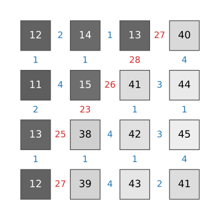
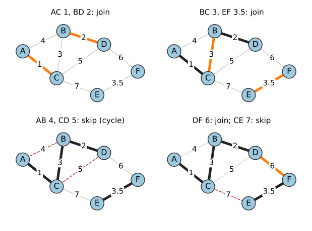
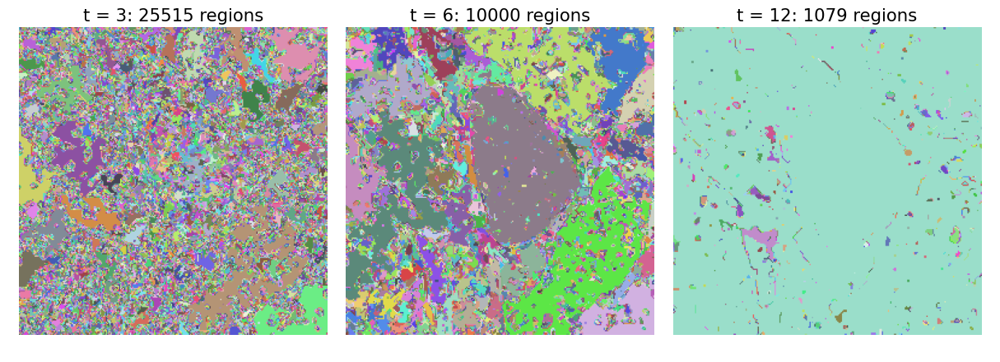
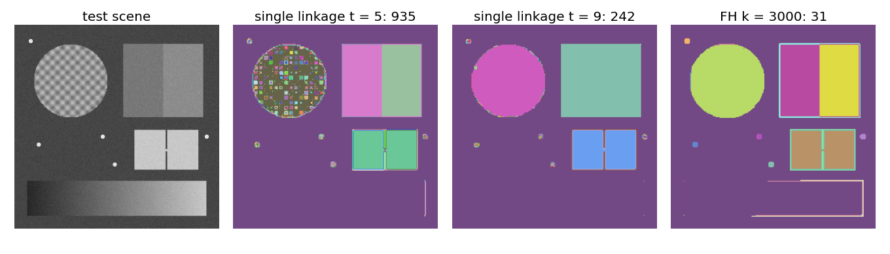
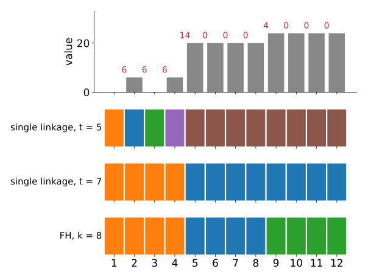
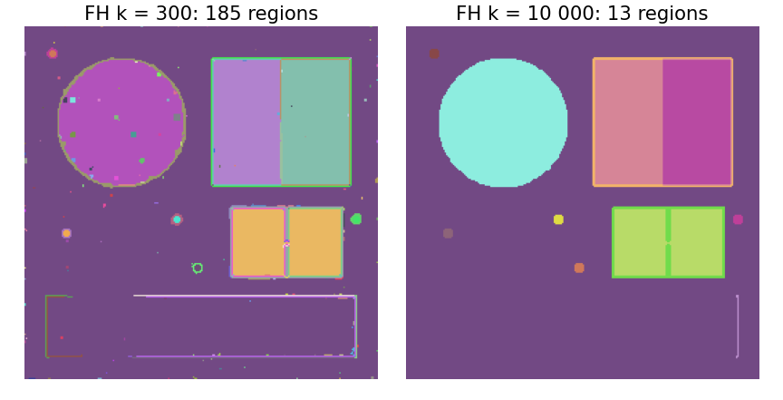
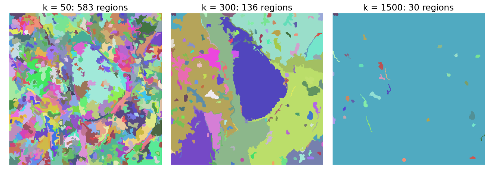
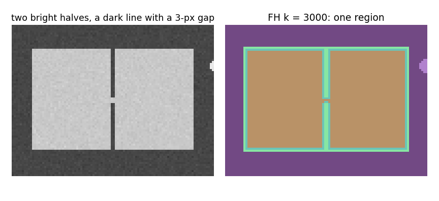

The random walker and the graph cut need seeds and solve a global problem. Today: no seeds, no energy, only a greedy rule on the same pixel graph.
Slides titled The math give the formulas and proofs; the ideas are complete without them.
Give each edge a dissimilarity d_{pq} = |I_p - I_q|: small inside a region, large across an edge (a colour distance for colour images).
Segmentation as grouping:
Right: a 4 \times 4 image. The blue numbers (≤ 4) lie inside the two regions, the red ones (23 to 28) on the boundary between them.

A spanning tree connects all nodes without cycles; the minimum spanning tree (MST) has the smallest total weight.
Kruskal’s algorithm: sort the edges by weight; take each edge unless it closes a cycle.
Right: AC 1, BD 2, BC 3, EF 3.5 are joined; AB 4 and CD 5 would close cycles; DF 6 joins the last two pieces; CE 7 is skipped. Total weight 1 + 2 + 3 + 3.5 + 6 = 15.5.
Prim’s algorithm grows one tree instead, always along its cheapest outgoing edge (used in the watershed unit).

“Would this edge close a cycle?” = “are both ends already in the same component?”
find looks it up, union merges two components, in almost constant time.Stop Kruskal at a threshold t: join across every edge with d < t. The components are the regions.
Right: the micrograph, smoothed with σ = 0.8. At t = 3 it is shattered into 25 515 regions, at t = 6 still 10 000, and at t = 12 one region covers almost everything.

Single linkage joins two regions as soon as one chain of small steps connects them:
And one global t cannot serve all regions. Right, with σ = 0.8:

Kruskal with a different merge test (Felzenszwalb & Huttenlocher, 2004):
Right panel of the previous figure: with k = 3000, the disc is one region and the squares stay separate.
[0, 6, 0, 6, 20, 20, 20, 20, 24, 24, 24, 24], k = 8. Edges 6, 6, 6, 14, 0, 0, 0, 4, 0, 0, 0.
Three regions. Single linkage: t \le 6 breaks the texture, t > 6 merges across the 4.

Define \mathrm{MInt}(C_1, C_2) = \min(\mathrm{Int}(C_1) + \tau(C_1), \mathrm{Int}(C_2) + \tau(C_2)) with \tau(C) = k/|C|, and the boundary predicate D(C_1, C_2) = “the cheapest edge between C_1 and C_2 is heavier than \mathrm{MInt}”: evidence for a boundary.


k = 300 finds the nucleus in one piece; the regions are irregular, with stringy borders that follow the texture. At k = 1500 the nucleus has merged with its surroundings through a weak part of its envelope.

Image libraries ship it under the authors’ name (“Felzenszwalb segmentation”).